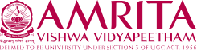
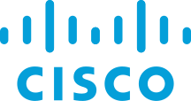

Network intelligence
Making network telemetry useful—from Catalyst SD-WAN data processing to predictive-network research and operational insight.
SD-WANTelemetryPySpark
Software Engineer / Cisco / Bengaluru, India
I work at the intersection of network engineering, software, and automation—turning complex systems into solutions that are easier to understand, operate, and improve.
01 / A little about me
My work spans network research, product engineering, and hands-on operations. I’m drawn to the challenge of making large-scale networks more observable and resilient—and to the thoughtful engineering it takes to make an idea work in the real world.
Curiosity, earned early.
From a CCNA course at Amrita to a career building with Cisco.
02 / What I work on
A blend of deep networking knowledge and modern software engineering.
Making network telemetry useful—from Catalyst SD-WAN data processing to predictive-network research and operational insight.
Building practical engineering tools, API services, test workflows, and repeatable automation for network systems.
Bringing a support engineer’s perspective to product quality, complex troubleshooting, and dependable network environments.
03 / The journey
Growing from network support into software engineering—each role adding a new perspective on how connected systems are built and run.


Enterprise NetworkingBuilding software in enterprise networking, with a focus on reliable systems and the technologies that connect them.
Worked on Catalyst SD-WAN telemetry pipelines, Go APIs, and automated traffic-generation workflows.
Supported predictive-network research through a global lab cluster and automated telemetry collection.
Partnered across engineering and customer teams to investigate issues and improve Catalyst SD-WAN and NFVIS.
Diagnosed complex network problems, designed high-performance environments, and supported customers across enterprise platforms.
Developed a resource management tool and took the first step into a career in networking.
04 / Professional development
Credentials across networking, cloud, and Linux.
05 / Stay in touch
I’m always glad to connect with people working on networks, software, and the ideas that bring them together.